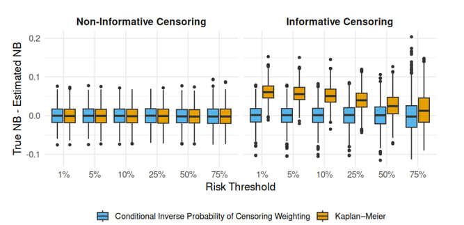
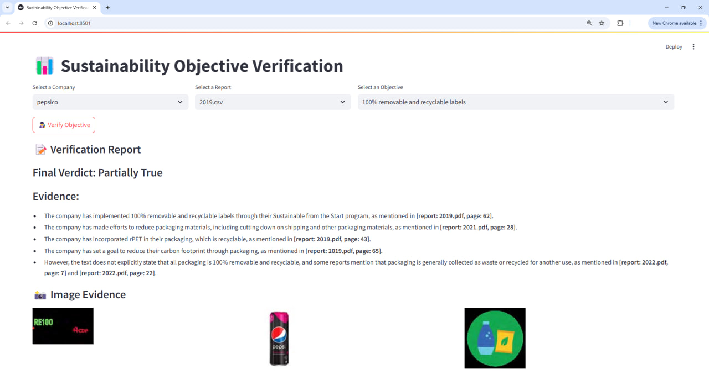
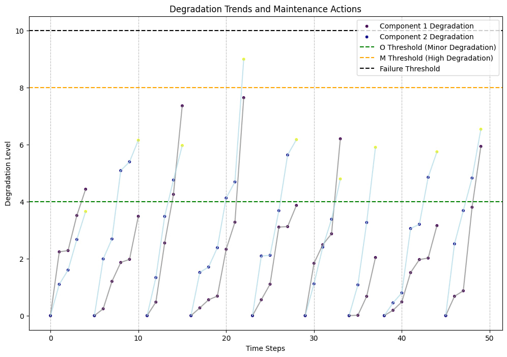
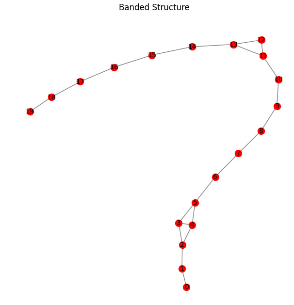
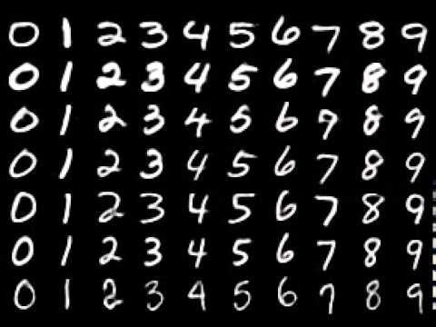
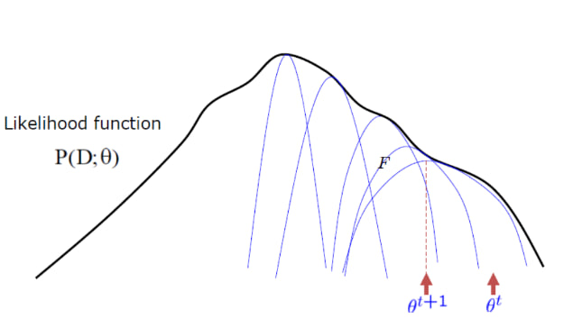
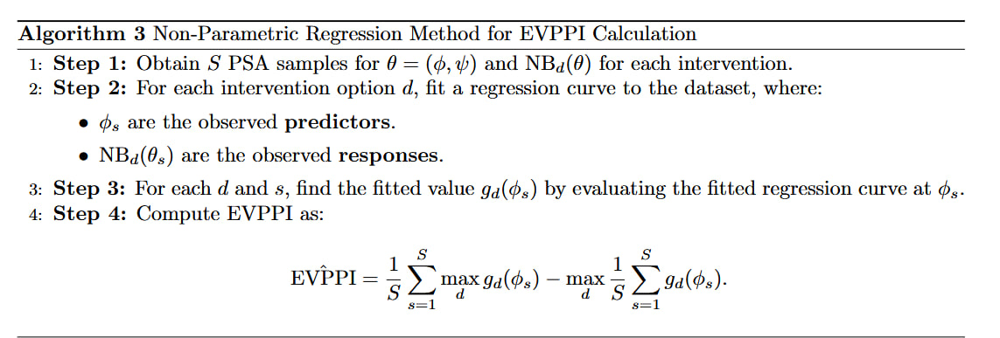

|
Amirhosein Farahmand
My research interests lie at the intersection of machine learning, statistics, and healthcare. I am particularly interested in developing and applying advanced machine learning and cutting-edge AI methods in medical contexts, with a focus on survival analysis, causal inference, and multimodal learning to support reliable clinical prediction and decision-making.
I am currently working with my principal investigator, Dr. Abdollah Safari, and Dr. Tae Yoon Lee from the Quantitative Sciences Unit at Stanford School of Medicine, as well as Dr. Mohsen Sadatsafavi from the Faculty of Pharmaceutical Sciences at the University of British Columbia. Our research focuses on evaluating the clinical utility of survival risk prediction models in the presence of informative censoring.
Previously, I worked as a Research Assistant at GISMA University of Applied Sciences under the supervision of Dr. Mohammad Mahdavi, where my research focused on multimodal AI and large language models.
I am actively seeking PhD or MSc opportunities to further develop my expertise in machine learning and statistical methodologies, particularly in connecting cutting-edge AI approaches with reliable and clinically meaningful decision-making.
Email /
CV /
Scholar /
LinkedIn /
Github
|
|
|

|
Robust Net Benefit Calculation for Survival Risk Prediction Models in the Presence of Informative Censoring
Amirhosein Farahmand, Mohsen Sadatsafavi, Abdollah Safari, Tae Yoon Lee
Society for Medical Decision Making (SMDM) Annual Meeting, Oslo, 2026 (Oral Presentation)
Abstract /
Code
Developing Conditional Inverse Probability of censoring weighting methodology to calculate time-dependent net benefit for survival risk prediction models in the presence of informative censoring for standard and competing risk survival outcomes.
|
|

|
Fact-Checking Sustainability Objectives Using Multimodal Retrieval-Augmented Generation
Mohammad Mahdavi, Amirhosein Farahmand, Abolfazl Nadi
IEEE International Conference on Data Mining (ICDM), 2025
Paper /
Code
Designed a multimodal Retrieval-Augmented Generation (RAG) system using large language models for claim verification across text and image inputs. Developed pipelines for evidence retrieval, multimodal analysis, and claim validation against a domain-specific knowledge base.
|
|

|
A Q-Learning Approach to Maintenance Policy Optimization for Series Systems with Degradation and Common Shocks
Amirhosein Farahmand, Fatemeh Fartash, Mohammadreza Yadollahi, Sina Zarandi
11th Seminar on Reliability Theory and Its Applications, 2025
Proceeding /
Code
Developed optimal maintenance policy of series system with gamma degradation as part of Reinforcement Learning for Maintenance application course.
|
Personal Projects
I have also worked on a variety of personal projects, some of which are featured below. For a full list, I recommend checking out my GitHub page.
|
|

|
Statistical Dependence and Graphical Models
Personal Project
GitHub
Constructed graphical models to represent variable associations using Pearson and Distance correlation metrics. Validated edge presence via Monte Carlo permutation tests, demonstrating Distance correlation's superior ability to capture both linear and non-linear dependencies on simulated datasets.
|
|

|
Deep Generative Models for Image Modeling on MNIST
Personal Project
GitHub
Implemented and evaluated various deep generative models from scratch on the MNIST dataset. The explored models include autoregressive (NADE), autoencoders (VAE, β-VAE, CVAE), GANs, EBMs, and normalizing flows (NICE). Also implemented DDPM and DDIM diffusion models with distillation techniques, evaluating performance using IS, KID, and FID metrics.
|
|

|
Stress Classification Using Gaussian Mixture Models
Personal Project
GitHub
Developed a Gaussian Mixture Model (GMM) within a Bayesian framework to classify stress levels. Leveraged machine learning and statistical techniques, including the Expectation-Maximization (EM) algorithm, for parameter estimation in classification tasks.
|
|

|
EVPPI Estimation for Predictive Machine Learning Models
Personal Project
GitHub
Implemented Expected Value of Partial Perfect Information (EVPPI) estimation for parametric predictive machine learning models. Utilized Bayesian bootstrapping and non-parametric Gaussian Process (GP) regression for net benefit analysis on Probabilistic Sensitivity Analysis (PSA) samples.
|
Teaching
I have also been an active member of our academic community. Some of my main contributions are as follows.
|
|
|
Teaching Assistantship
University of Tehran
2021 – 2025
- TAed for: Statistical machine learning, Non-linear optimization, Stochastic processes, Multivariate probability, Linear Algebra, Calculus, Biostatistics, and etc.
- Held classes for 250+ students and prepared 25+ assignment series.
- Designed real-world problems and aggregated widely used problems from academic references.
- Graded 1000+ student submissions, quizzes, and exams.
|
|
{kind=link}